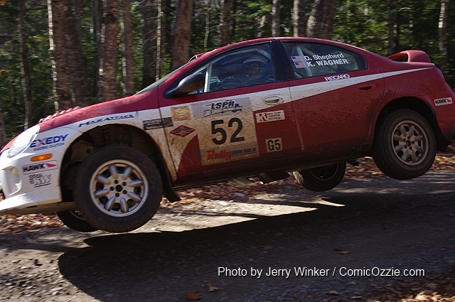

21 two-wheel-drive rally cars battled over the challenging Lake Superior Performance Rally stages on the scenic Upper Peninsula of Michigan; O’Sullivan/Wagner win Jake Himes Cup
Portland, OR (November 1, 2010) – The third and final round of the 2010 MaxAttack! Series, presented by the Danza del Sol winery took place on a surprisingly sunny and warm Upper Peninsula weekend on October 16th. Normally rain, fog and snow are hazards that teams have to face at this rally, but it was sunny and warm and dust actually turned out to be a problem later in the event. Twenty-one teams registered for the last MaxAttack! round of the season, once again with a wide range of machinery, and all but five made it to the end of the 90 stage miles.
The winner of the MaxAttack! round at Lake Superior was the Dodge Neon SRT 4 of Doug Shepherd and co-driver Karen Wagner. This was the same car in which Wagner and driver Lauchlin O’Sullivan dominated the New England Forest Rally. Shepherd and Wagner’s run was far from drama-free, however, as the team replaced the turbo just days before the rally, then bounced back from additional turbo problems and from hitting a tree that could have potentially ended their victory run. Hot on their heels all day was another SRT 4, this one piloted by Lauchlin O’Sullivan and Scott Putnam. O’Sullivan lost 37 seconds to Shepherd on Stage 4, however, when the SRT 4 punctured its left front tire. O’Sullivan also hit heavy dust later in the rally, leaving Shepherd and Wagner with a 57 second margin of victory despite that team’s tree and turbo incidents.
Following the initial four stages, just 23 seconds behind Shepherd, was a tremendous battle for second through sixth, with five teams separated by just 10 seconds. O’Sullivan’s flat meant that he was among that group, but he would pull away from this pack as the rally progressed, including setting a fast overall event stage time on Stage 6. The first of the pursuing pack to falter was the Honda CRX of Cody Crane and Billy Irvin. The duo, who had towed all the way out from Oregon, lost their transmission and coasted to a stop on Stage 5. Showing consistent speed all day, and ultimately finishing third, was the immaculate Mitsubishi Lancer of brothers Jan and Jody Zedril from Winnipeg, Manitoba. They finished 47 seconds behind O’Sullivan.
It was a close battle for fourth and fifth between the Plymouth Neon of Chris Greenhouse/Brian Johnson and the Mazdaspeed3 of Eric Burmeister/Dave Shindle. Burmeister is an alumnus of Michigan Tech University in Houghton, and has been attending this rally since he was a kid, so he considers Lake Superior his home rally. But Greenhouse, from Cincinnati, Ohio kept it close. When it was all said and done, despite some intermittent mechanical problems the Burmeister/Shindle Mazda edged out Greenhouse/Johnson by just 27 seconds.
The Top 5 finishers in the final round of the 2010 MaxAttack! series, and prize money won, were:
1. Dough Shepherd/Karen Wagner, Dodge SRT 4 ($1500)
2. Lauchlin O’Sullivan/Scott Putnam, Dodge SRT 4 ($1200)
3. Jan Zedril/Jody Zedril, Mitsubishi Lancer ($1000)
4. Eric Burmeister/Dave Shindle, Mazdaspeed3 ($800)
5. Chris Greenhouse/Brian Johnson, Plymouth ($500).
The winners of the coveted Jake Himes Cup for 2010 were driver Lauchlin O’Sullivan and co-driver Karen Wagner, the defending 2009 champions. It is interesting to note that Lauchlin and Karen competed together at the New England Forest Rally, then against each other at the Lake Superior Rally, yet both accrued enough points to repeat as series champions. Of additional significance is the fact that Karen Wagner has finished first twice, second, and fourth as co-driver in the four-year history of the MaxAttack! series.
The 2010 MaxAttack! Rookie Co-Driver of the Year, sponsored by Alex Gelsomino, was awarded to Lori O’Driscoll from Leadville, CO who accompanied her husband, Chris O’Driscoll, to 6th place at the Oregon Trail Rally and 16th at LSPR in a Honda CRX. This is the O’Driscoll’s first year of stage rally competition, and Lake Superior was just their fifth event weekend.
The Rallysports Group of America would like to thank the organizers of the Lake Superior Performance Rally for their gracious assistance and support, all the volunteers, and Rally America.
The 2010 MaxAttack! Rally Series Presented by Danza del Sol consisted of three events, which were:
- Oregon Trail, May 14-16, Portland, The Dalles, and Dufur, OR, http://www.oregontrailrally.com
- New England Forest Rally, July 16-17, Bethel, ME, http://www.newenglandforestrally.com
- Lake Superior Performance Rally, October 16-17, Houghton, MI, http://www.lsprorally.com
Oregon Trail and the New England Forest Rally were the qualifying events for the Jake Himes Cup, and the Lake Superior Performance Rally was the central Shootout event.
Each event featured a $5,000 prize fund to be distributed among the top two-wheel-drive teams, as well as a season championship. For more information about the MaxAttack! Series and the Rallysports Group of America, please visit http://www.max-attack.com.
Plans for the 2011 MaxAttack! Rally Series will be announced soon.
Mandatory Photo Credit: Doug Shepherd and Karen Wagner soar to MaxAttack! victory at the Lake Superior Rally. Photo by Jerry Winker.
--30--
About Danza del Sol Winery
Nestled in the rolling hills of the beautiful Temecula Wine Valley, Danza Del Sol Winery is a thirty-five acre estate winery located in Southern California’s Wine Country. While Danza Del Sol’s tasting room officially opened in February 2010, the winery itself already has a remarkable history. The estate was previously owned by Dr. William Filsinger and his late wife Katharine, who provided the Temecula Wine Valley with exceptional wines for nearly 30 years. Danza Del Sol is dedicated to producing a unique range of premium varietal and proprietary blended wines that are sure to exceed your expectations, at affordable prices. For more information, please visit http://danzadelsol.com/.
About Rallysports Group of America
Rallysports Group of America, Inc. (RSGA) was formed as an organization in 2006 to advance the sport of performance stage rally in the United States. By providing education on performance driving, car preparation and safety, and by fostering the growth of meaningful competition, RSGA seeks to provide a sustainable and competitive arena for the advancement of North American performance rally that promotes increased value for rally competitors, organizers, and sponsors alike. For more information, please visit http://www.max-attack.com.
About Rally America, Inc.
Based in Golden Valley, Minn., Rally America sanctions the premier rally racing series in the United States, the Rally America National Championship Series. In 2010, Rally America will conduct six National Championship events at venues across the country, from Olympia, Wash., to Bethel, Maine. Rally America competitors reach speeds well over 100 mph in modified street cars on natural-terrain courses of gravel, dirt or snow. In the Fall of 2010, Rally America will also introduce European-style wheel-to-wheel rally cross to North America. For more information regarding Rally America, Inc., the 2010 Rally America National Rally Championship or the new European-style rally cross events taking place at the New Jersey Motor Sports Park in the fall of 2010, please visit www.rally-america.com.